Linux Lite Installation Guide
Installing Linux Lite to your computer
Setting your Language
Mounting drives & partitions
Adding another User
User permissions
Removing a User
Resetting your password
Terminal Basics
Themes & Icon sets
Writing the Linux Lite ISO to a DVD
Here is some free DVD burning software for you to select from:
BurnAware Free - http://www.burnaware.com
CDBurnerXP - http://cdburnerxp.se/
ImgBurn - http://www.imgburn.com/
Place a blank DVD in your DVD drive, open up the program, select the iso file that you want to burn. Choose the lowest burn speed, this will greatly reduce the risk of your burn becoming corrupt as can sometimes happen. A 4x speed is recommended if you have it.
Writing the Linux Lite ISO to USB using software
Unetbootin:
UNetbootin allows you to create bootable Live USB drives. Unetbootin is available for Windows, Mac and Linux.
Download and
follow instructions from here -
http://unetbootin.sourceforge.net/
Writing the Linux Lite ISO to USB using a terminal in Linux
To find out the letter of your USB stick, open a terminal and type:
df -h It is usually
listed as 'media' or similar.
Be very careful to make sure you choose the right drive letter,
as you can see in the Filesystem column, my device is
sdb another clue is the value in the Size column, here it
is shown as 15G. In this example my device is an Apacer
15gb USB stick.

Open a folder and make sure you are in the directory that the
iso file is in. Open a terminal in that directory and type the following:
| sudo dd if=linux-lite-1.0.6-32bit.iso of=/dev/sdx
bs=4M for 64bit: sudo dd if=linux-lite-1.0.6-64bit.iso of=/dev/sdx bs=4M |
where 'x' is the letter of your USB device.
The Live DVD/USB image will boot into the desktop automatically, there is no need to login manually.
No USB Boot option in the Bios? Use PloP
Full instructions are here -
http://www.howtogeek.com/howto/16822/boot-from-a-usb-drive-even-if-your-bios-wont-let-you/
Installing Linux Lite to your
computer
Start your computer, and go into your system Bios and check
that the boot order is set so that DVD and USB devices are set
to boot first. This varies from bios to bios. Refer to your
motherboard documentation for more information.
Once you are happy with your bios set up, insert the DVD disc or
USB stick into your computer and reboot your computer. You'll
be greeted with the following screen. Let the timer run down if
you want to boot to the Live session.
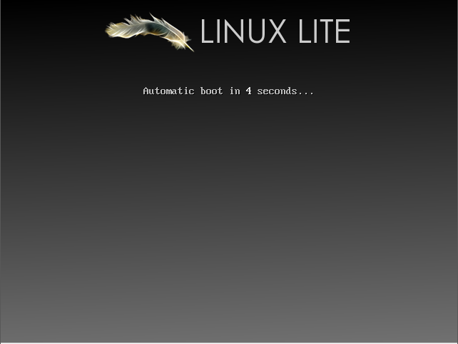
Press any key to see the next screen.
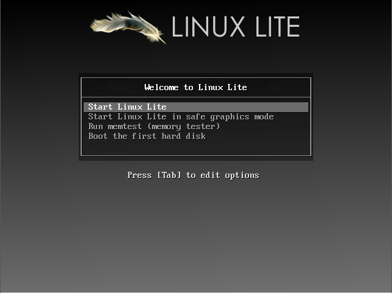
Make sure Start Linux Lite is highlighted, press the enter key to boot the Live session. This is also a good way to check that all of your hardware is supported. If you are having trouble booting and you get just a black screen, try the second option, Start Linux Lite in safe graphics mode.
The other options are:
Run memtest - Test your computer memory for faults.
Boot the first hard disk - boot the existing operating
system.
NOTE: If you are having any trouble booting Linux Lite after
installation,
please read through this trouble
shooting guide.
The computer will go through the boot up process, this may take
anywhere from a few seconds to a couple of minutes depending on
your hardware. The login for the Live user is automatic, there
is no need to login. An explanation of the various Menu's can be
found by clicking here.
Before we proceed, make sure you have an internet connection first. Click here if you need help to get online before you install Linux Lite.
Once you've had a look around Linux Lite and are ready to install the first step is to double click on the Install Linux Lite icon on your Desktop.
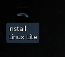
The installer will then open on the desktop and display the Welcome section of the installer. From here you will select your preferred language and view release notes for this version of Linux Lite.

After selecting continue, you are presented with some requirements for the installation. Ensure that these requirements are met by viewing a check mark beside them. You may also choose to download any available updates while installing or install third-party software during the installation. NOTE: Please verify the legal status of the use of the third party software in your country/territory.
Now it is time to choose the method of installing Linux Lite to your hard disk. You will have several options during this phase of the installer.
Install Linux alongside Windows - otherwise known as a
dual boot. An option to boot from Windows or Linux Lite when
your computer starts.
Replace Windows with Linux - completely replace Windows
with Linux Lite.
Something else - a more advanced option. Manually set
each partition size.

Erase Disk and Install Linux
Upon selecting Erase Disk and Install Linux you are presented with a screen displaying how your install will be represented on the hard disk. This is the most simple option available and will show your hard disk being completely and solely occupied by Linux Lite. You may select the disk you wish to install Linux Lite to from the menu labeled: Select Drive. You may then select Install Now when you are ready to begin installing.
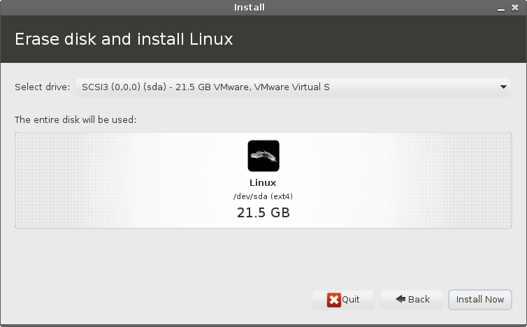
Install Linux alongside Windows
If you have selected to install Linux Lite alongside an existing copy of Windows, you will be greeted with a screen representing the two operating systems on the disk. You may choose the disk to install Linux Lite to from the top menu labeled: Select Drive. In the main part of the window you will see your hard disk split into two sections, one containing your Windows install and one for your proposed Linux Lite installation. You may drag the empty space between them to allocate space from one to the other as needed. You may then select Install Now after you have made the desired changes.

Something Else
NOTE: FOR ADVANCED USERS ONLY
If the other methods do not fulfill your personal requirements for installation you may select Something Else and manually partition your hard disk. There are many options available from this screen. All of your disks will be visible in a hierarchal tree view in the main window. From here you can see disk devices, existing partitions, and unallocated space. If your disk is new or you are creating a new install in a virtual machine you may need to select New Partition Table from the options below. This will erase the disk and provide you with a clean slate. WARNING: This will destroy any data on the disk selected! Another option is to add a partition to the disk by selecting Add from the button options. This option requires that there exists free space on the disk with which to create the partition. When adding a partition, you may select the place on the disk to create the partition, the partition size, the filesystem type, and the point in the filesystem that this partition will be mounted. If you need to modify these attributes of a partition, you may select Change from the button options. If there exists partitions that you wish to be rid of, you can select Delete from the button options to delete the partition. If you wish to return everything back to its original state you may use the Revert button. NOTE: This will only work if you have not written changes to the disk.
Under the partitioner there is a menu for selecting the location of the boot loader's installation. You may select a drive's MBR, indicated by the device name e.g. /dev/sda, or you may select a partition to install the boot loader to. The safest option is to install the bootloader to the MBR of the first disk as the bootloader will intelligently add entries for installations of Windows and other Linux installs.
NOTE: If you have any NTFS drives, it is important to give these a mount point during the install. That way they will be easily accessible after the installation.
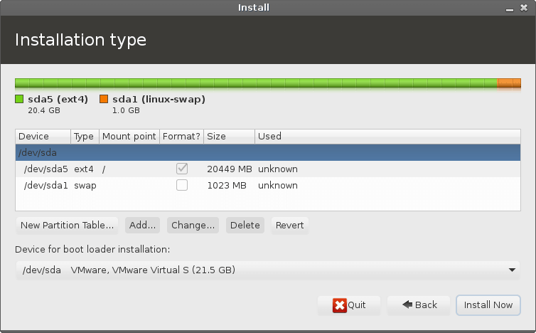
After completing the partitioning phase of the installation, you are prompted to set up some personal details about the system. The installer will continue to work in the background while you are filling out this information. The first step is to select your time zone. The installer may detect your time zone based on your location via your ISP's information. If not, you may select your time zone by either clicking on your region on the supplied map or by typing in your area in the box below.

The next step is to select your keyboard language and layout. You may select the language that your keyboard corresponds to on the left and any specialized layout on the right. This is the point where you may select to enable international keys on your keyboard. Though, these options may be changed later.

On the next screen, you are greeted by several forms to fill. These forms include:
Your name - your personal name.
Your computer's name - the name that you wish to use to
identify the computer on your network.
Pick a username - your user name that is used to login to
the system.
Choose a password - your password that you wish to use
for your user and sudo password.
Confirm your password - enter the above password again.
NOTE: Choose a strong password, a mix of upper and lower case
as well as a mix of numbers and characters. An example of this
would be: y%9L2x#o would be
considered a strong password. Use a program like
Keepassx
to keep all your passwords safely stored and NEVER use the same
password for different websites.
Never compromise your security for convenience.
There are also options to enable auto-login for your user or have the computer prompt you for a password everytime you login. Finally, there is a selection for encrypting your user's Home folder for extra security.

If you have a webcam, you may encounter a screen asking to
'Take a photo' this feature is not supported.
After finishing all of these steps you will be greeted with a slideshow detailing all of the features and software that are included in this version of Linux Lite. You may allow them to play on their own or navigate through them using the arrow buttons on the sides of the window.
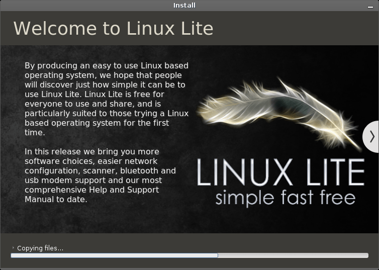
Once the installation is complete you will be prompted to either restart your computer and begin using your newly installed Linux Lite system or to continue using the testing environment on the DVD/USB that you are using. If for some reason your computer hangs on restart, press F4.

After a reboot you will be greeted by the login screen:

After you have logged in you will see the desktop. Congratulations! Now that we've installed Linux Lite, lets take a look at what's available on the Menu by clicking here.

You may want to set a system wide language, here's how to do it.
Click on Menu, Settings, Language Support.
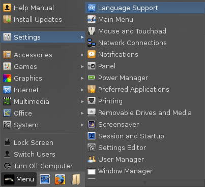
You will get one of two boxes pop up like the ones below, follow the instructions by clicking on either Update or Install.

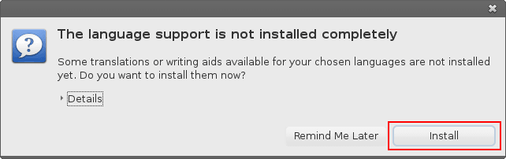
You will then be prompted for your password, enter it to continue.
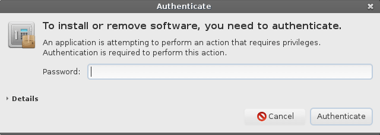
Now click on the button Install / Remove Languages.
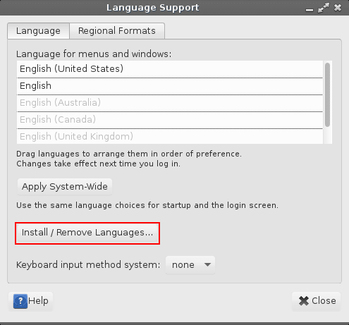
In this example, we'll install the Portuguese language. Scroll down, find your language and tick the box next to it, then click on Apply Changes.
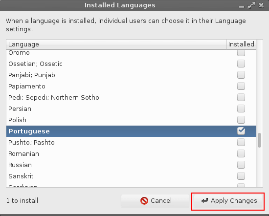
Your computer will begin to download all the language files, this may take a while.
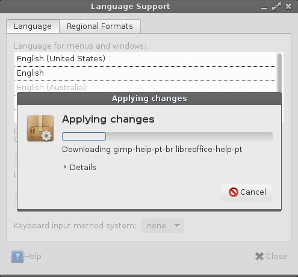
Once that is done, scroll to the bottom of the Language for menus and windows box and drag your newly installed language to the top of the list. Then click on Apply System-Wide, you'll be prompted for your password again.
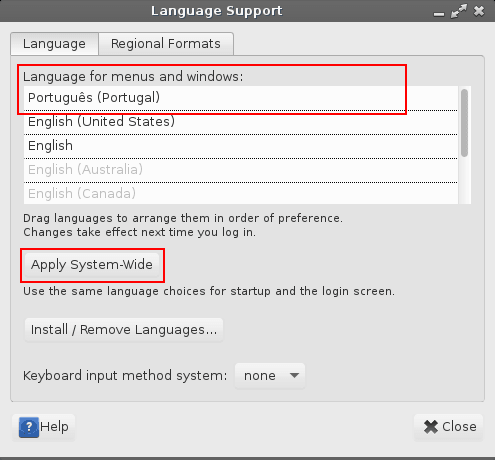
Now click on the Regional Formats tab, select the language you just installed, and click on Apply System-Wide.
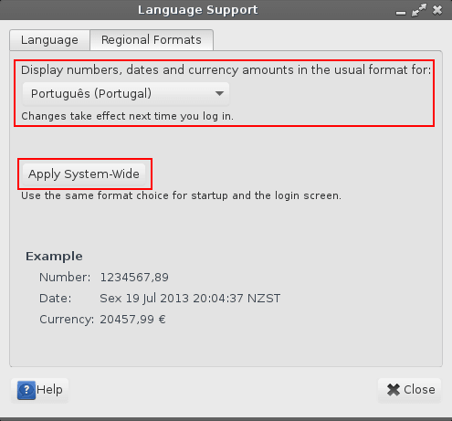
Now logout and login again and you will see that your new language has been applied.
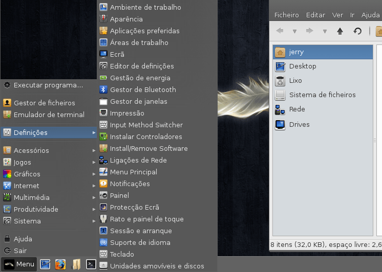
Please note that not all programs may not have your language applied. If this is the case, search for that program in Install/Remove Software and see if there is a language pack available for it.
During the installation process, you may forget to or not know how
to mount any other drives or partitions that you have.
NTFS
First we need to make a mount point in your home folder. This is
where you will access those files.
In your home folder, right click and make a new folder, in this
example we'll call it 'ntfsfiles'. Now onto the
next step.
Open a terminal and type: sudo blkid
followed by your password. This will output the uuid's for all
your hard drives.
Take the uuid for that drive and place it into /etc/fstab, first
we will back up the fstab file:
sudo cp /etc/fstab /etc/fstab.bak
In the terminal still, type in: sudo leafpad /etc/fstab
A text file will open up. Lets say the uuid for our new ntfs
drive is - 0463741f-a838-40c8-b40f-3dbb7f988e29.
We would enter this into our fstab as:
UUID=0463741f-a838-40c8-b40f-3dbb7f988e29
/home/user/ntfsfiles ntfs defaults,umask=007,uid=1000,gid=1000 0
0
You can put the above line anywhere in the fstab file.
Make sure you leave a blank line at the bottom of the fstab file
before you save the file.
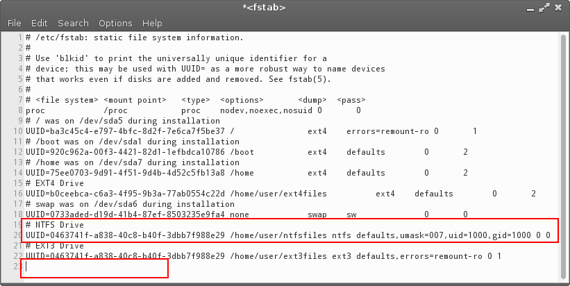
Where user is your username. Save the file. Open a terminal and type: sudo mount -a
If all went to plan, in /home/user/ntfsfiles
you should see all your files.
First we need to make a mount point in your home folder. This is
where you will access those files.
In your home folder, right click and make a new folder, in this
example we'll call it 'ext4files'. Now onto the
next step.
Open a terminal and type: sudo blkid
followed by your password. This will output the uuid's for all
your hard drives.
Take the uuid for that drive and place it into /etc/fstab, first
we will back up the fstab file:
sudo cp /etc/fstab /etc/fstab.bak
In the terminal still, type in: sudo leafpad /etc/fstab
A text file will open up. Lets say the uuid for our new ext4
drive is - 0463741f-a838-40c8-b40f-3dbb7f988e29.
We would enter this into our fstab as:
UUID=0463741f-a838-40c8-b40f-3dbb7f988e29
/home/user/ext4files ext4 defaults 0 2
You can put the above line anywhere in the fstab file.
Make sure you leave a blank line at the bottom of the fstab file
before you save the file.
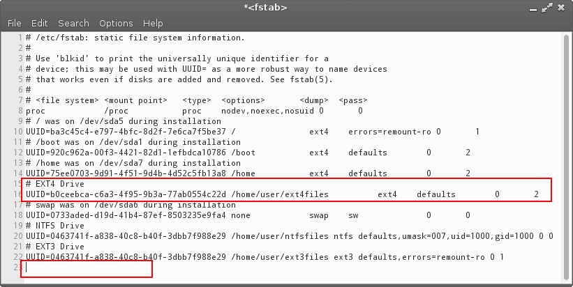
Where user is your username. Save the file. Open a terminal and type: sudo mount -a
If all went to plan, in /home/user/ext4files
you should see all your files.
First we need to make a mount point in your home folder. This is
where you will access those files.
In your home folder, right click and make a new folder, in this
example we'll call it 'ext3files'. Now onto the
next step.
Open a terminal and type: sudo blkid
followed by your password. This will output the uuid's for all
your hard drives.
Take the uuid for that drive and place it into /etc/fstab, first
we will back up the fstab file:
sudo cp /etc/fstab /etc/fstab.bak
In the terminal still, type in: sudo leafpad /etc/fstab
A text file will open up. Lets say the uuid for our new ext3
drive is - 0463741f-a838-40c8-b40f-3dbb7f988e29.
We would enter this into our fstab as:
UUID=0463741f-a838-40c8-b40f-3dbb7f988e29
/home/user/ext3files ext3 defaults,errors=remount-ro 0 1
You can put the above line anywhere in the fstab file.
Make sure you leave a blank line at the bottom of the fstab file
before you save the file.
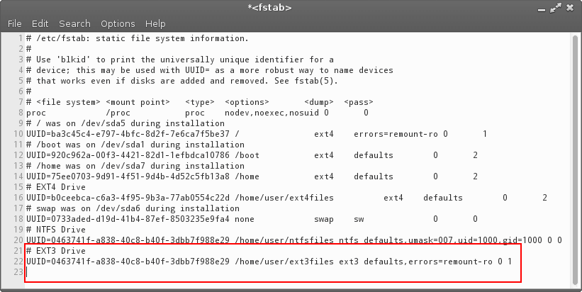
Where user is your username. Save the file. Open a terminal and type: sudo mount -a
If all went to plan, in /home/user/ext3files
you should see all your files.
To add another user, open up a Terminal and type in the following:
| sudo adduser name |
where name is the name of your new user. The only details
you will need to enter is:
your password
Enter new UNIX password:
Retype new UNIX password:
NOTE: Choose a strong password, a mix of upper and lower case
as well as a mix of numbers and characters. An example of this
would be: y%9L2x#o would be
considered a strong password. Use a program like
Keepassx
to keep all your passwords safely stored and NEVER use the same
password for different websites.
Never compromise your security for convenience.
All the other details are voluntary and not necessary.
Is the information correct? [Y/n] (press enter if they are correct)
| NOTE: If you have already enabled auto login for another user, you will need to disable it so that your new user can login. If you don't want to disable auto login for yourself, you can click on 'Menu, Lock Screen' choose 'New Login' from the locked screen and the newly created user can then login. Only one user can have auto login enabled at a time. |
After you have added another user, by default that user will be on a limited account. They are still able to use programs, they just won't have any administrator rights. To give another user admin rights, open up a Terminal and type in the following:
| sudo adduser name sudo |
enter your sudo password and where name is the
name of the user you want to give admin rights to.
To remove a user, open up a Terminal and type in the following:
| sudo userdel name |
enter your sudo password and where name is the name of
the user you want to remove.
If you want to remove their home directory as well (make sure you
backup any files you want to save first)
| sudo userdel -r name if you get a message saying they are still logged in, try: sudo userdel -r -f name |
enter your sudo password and replace name with the name of
the user you want to remove.
Forgot your password? It happens to all of us at some stage.
Fortunately setting it again is fairly straight forward.
Lets begin.
Boot up your computer and immediately press and hold down the Shift key. You should see a screen like this.

Next press the e key whilst that top line is highlighted. This
will take you to the next screen.
Use your arrow keys to move down to the line highlighted in the
picture below. Use the arrow key until you reach the end of that
line.
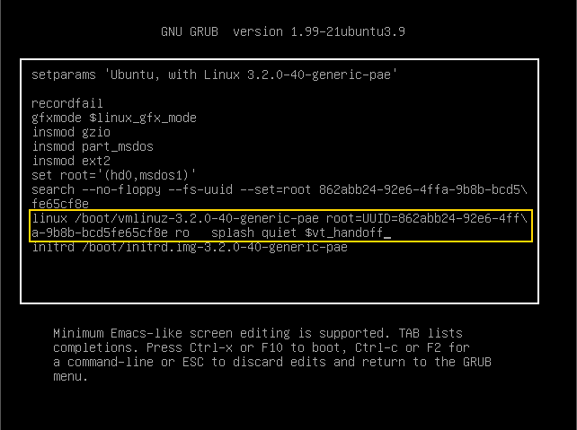
Press the backspace key repeatedly until you remove: ro
splash quiet $vt_handoff and replace that
text with: rw init=/bin/bash so that it looks like the
picture below.

Now press either F10 or Ctrl+X to boot your machine to a command prompt.
At the prompt, type: passwd jerry where jerry is your username, then press enter.
You will be asked to type in a new password twice.
Your password has now been changed. Now we are ready to save
those changes, then reboot the computer.
Type in: sync then hit enter. Then type in: reboot -f

Your computer will reboot. If you see the screen shown below again, just hit enter. This is normal and won't appear the next time you reboot your computer. You may also not see the boot animation on this boot, this to is normal and will reappear next time you boot up.
Now login with your password.
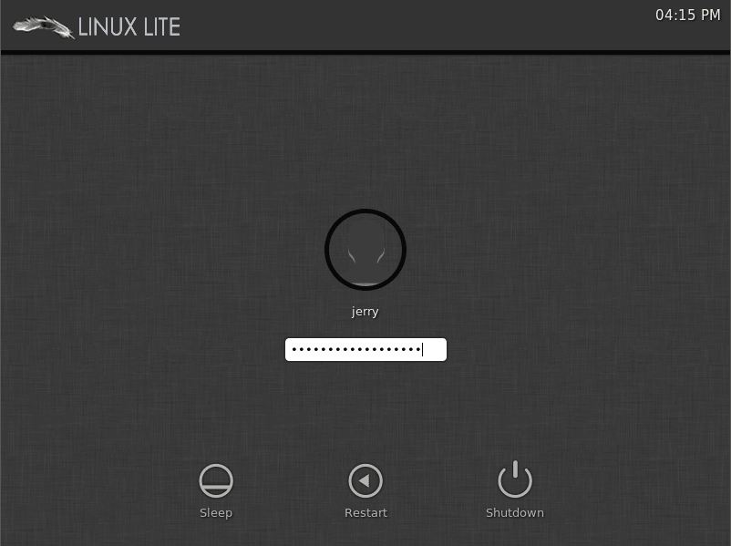
Linux Lite is designed to be such that new users won't have to venture into the terminal to much. But, there will be some occasions where we need to run the odd terminal command. The following is a very basic introduction to some of the more common terminal commands that will help you to navigate around your computer, should you need to.
TIP: instead of typing out the entire name of a file or folder, type the first few letters and hit your TAB key, this will auto complete the name. This will save you lots of time but be careful and make sure you have typed the correct file name. In the examples below 'directory' also means 'folder'.
ls - display a list of files in the current directory
ls -la - a more comprehensive display of file properties in the current directory, including hidden files
pwd - shows you the current directory you are in
cd - change directory, change to another directory
cd .. - go back one directory

cp - copy file to another directory
rm - remove a file or directory
rm -rf - permanently delete a file or directory
mv - rename a file or directory.
You can also use it to move a file from one location to another
eg. mv /home/jerry/file1.doc /home/jerry/Documents
cat - display the contents inside a file

mkdir - make a new folder
rmdir - remove a folder
killall - kill a program with that name
man - read the manual for a particular program (type q to exit the manual)


The default theme for Linux Lite is Mediterranean Light.
The default icon set is Faenza.
There are some additional Theme and Icon sets in Linux Lite. Go
to Menu, Settings, Settings Manager.
There are 2 main areas in the Settings Manager that take care of
these settings - Appearance and Window Manager.
Click on Appearance. Here you will see the Style
and Icons tabs.
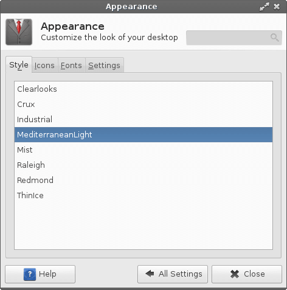
As you click through the various themes and icon sets you
will notice visual changes on your computer.
Close Settings Manager before moving onto the next part
of this tutorial.
This next section will show you how to apply new themes and icons.
Applying a new Theme
Head over to the XFCE Look website and choose theme of your liking.
NOTE: Not all themes from there will work as you would expect, please read all of the documentation before attempting to apply a new theme. Some make installation easy via a PPA, this is a preferable method to the one shown here. Click here for more information on how to install a new PPA. Whichever theme you choose, make sure that it mentions XFCE compatability.
The first thing we need to do is open up our home folder. Click
on View, Show Hidden Files.
Right click somewhere in your home folder, Create Folder,
make a folder called .themes (you will only need to do
this once.) This is where we will copy the new theme to.
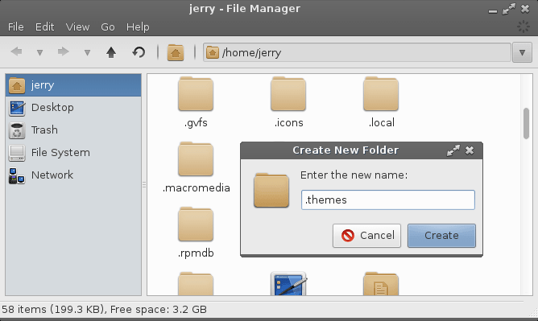
Download a theme of your choosing. In this example we will choose the Redbird theme.
NOTE: Each theme may come with a specific set of install instructions, if they do, please follow those instructions.
Next extract the theme you just downloaded (right click, Extract Here)
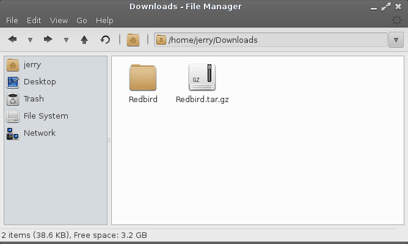
Copy the Redbird theme folder to the .themes folder in your home folder.
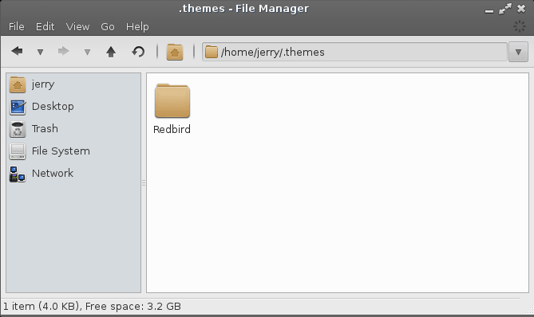
Now go to Menu, Settings, Settings Manager. There are 2 places we need to apply the new theme, Appearance and Window Manager.
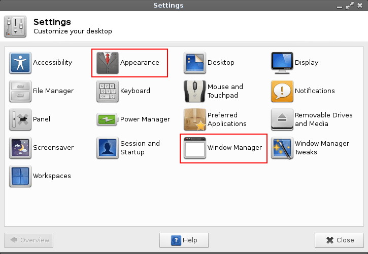
First we'll click into Appearance. Select Redbird from the list.
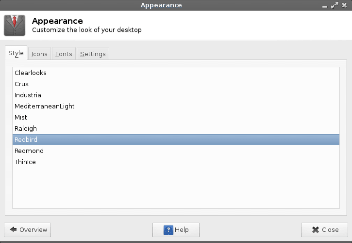
Click on Overview in the bottom left to go back to the
Settings Manager.
Now click into Window Manager and select Redbird.
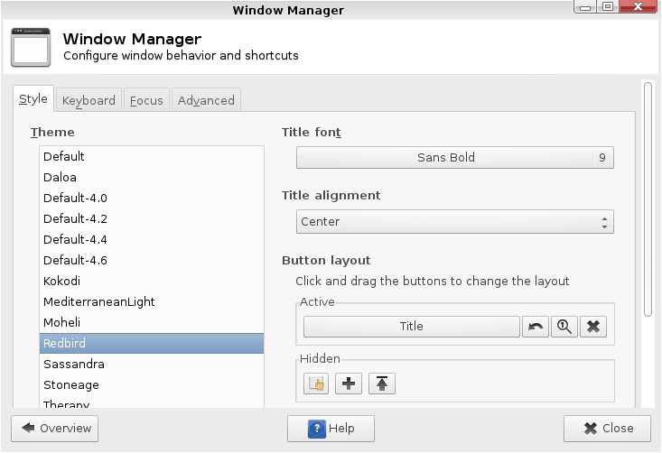
We're almost there. In the picture below you can see that it hasn't quite displayed our tray icons properly.
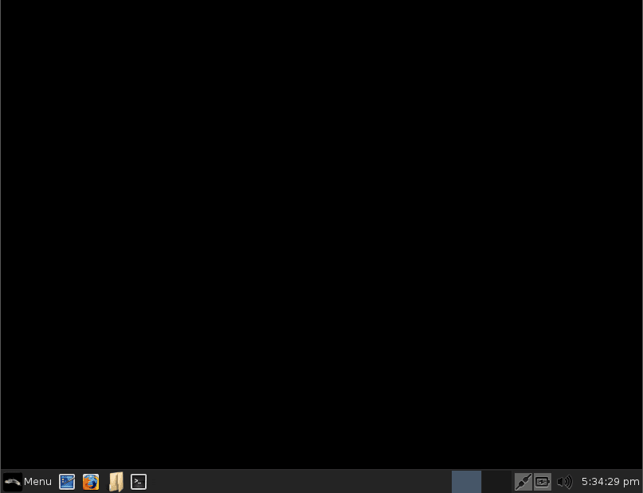
Lets click on Menu, Turn Off Computer, and Log Out.
Log in again and our new theme now displays properly.
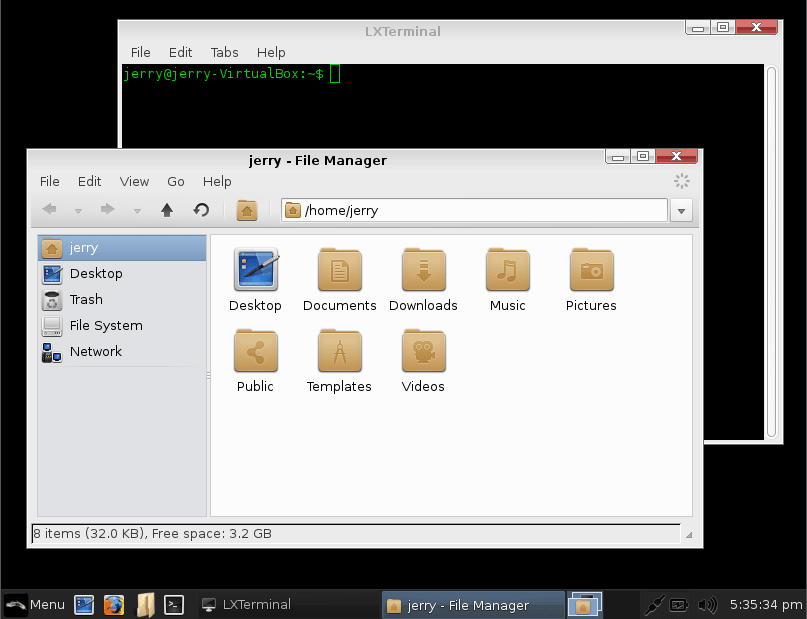
Applying a new Icon set
Head over to the Gnome Look website and choose an Icon set of your liking.
NOTE: Not all icon sets from there will work as you would
expect, please read all of the documentation before attempting
to apply a new icon set. Some make installation easy via a PPA,
this is a preferable method to the one shown here. Click
here for more information on how
to install a new PPA.
The first thing we need to do is open up our home folder. Click
on View, Show Hidden Files.
Right click somewhere in your home folder, Create Folder,
make a folder called .icons (you will only need to do
this once.) This is where we will copy the new Icon set to.
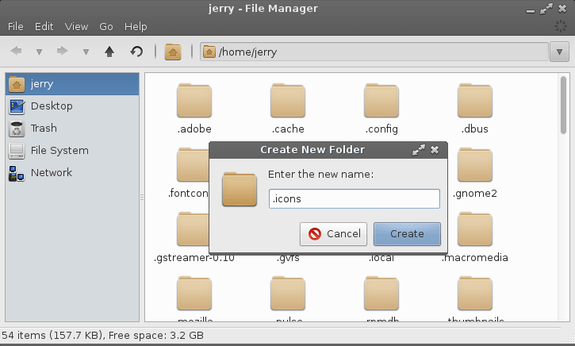
Download an icon set of your choosing. In this example we will choose the Clarity Icon Set.
NOTE: Each icon set may come with a specific set of install instructions, if they do, please follow those instructions.
Next extract the icon set you just downloaded (right click, Extract Here)
Copy the icon set folder to the .icons folder in your home folder.
Now go to Menu, Settings, Appearance. Select the Icons tab and click on your new Icon set.
Here is a look at our new icon theme.